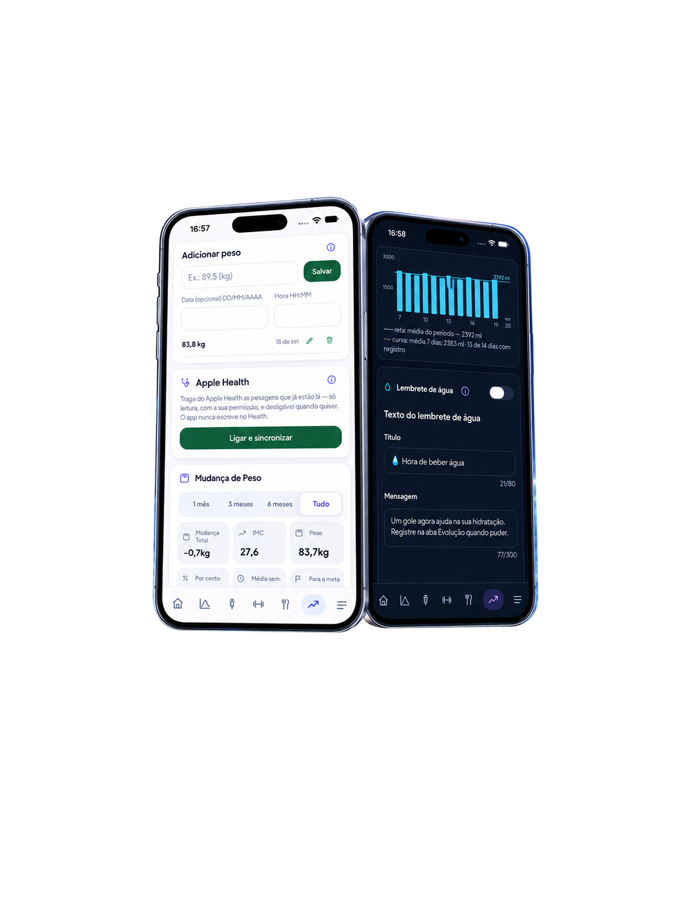
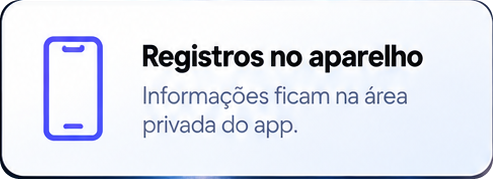

Documento público
Política de Privacidade
Resumo em linguagem simples: o PepDozy não possui conta, login, servidor próprio, publicidade, analytics ou telemetria. Seus registros permanecem na área privada do app no iPhone. Eles só saem quando você decide exportar ou compartilhar um arquivo.
1. Finalidade e limites
O PepDozy é um aplicativo de registro pessoal para organizar peso, alimentação, água, atividades, como o usuário se sentiu, anotações, fotos, medições de glicemia e, quando a pessoa escolher, registros de GLP-1.
O módulo de GLP-1 é opcional. A versão 1.1.4 apresenta um histórico descritivo dos registros informados, sem estimar quantidade de medicamento no organismo e sem calcular estoque.


2. Dados tratados no aparelho
Conforme as funções que o usuário escolher, o app pode guardar localmente:
- registros opcionais de GLP-1, com substância, marca, quantidade, data, horário, local e observações;
- nome opcional, idade, sexo, altura, peso, meta de peso, nível de atividade e preferências;
- água, exercícios, como o usuário se sentiu, refeições, nutrientes, alimentos próprios, quantidades em unidade, gramas ou mililitros quando disponíveis e metas nutricionais informadas;
- medições de glicemia informadas manualmente em mg/dL, obtidas em medidor externo, com data, horário e contexto opcional escrito pelo usuário;
- anotações livres, respostas opcionais a perguntas guiadas e revisões semanais escritas pelo usuário no Meu Diário;
- fotos de progresso salvas na pasta privada do app;
- textos, horários e preferências de notificações locais;
- registro local do consentimento e indicadores de backup;
- peso lido do Apple Health, somente se o usuário ativar a integração e autorizar a leitura.
O PepDozy não cria perfil publicitário, não vende dados e não disponibiliza esses registros ao desenvolvedor.
Os textos do Meu Diário são armazenados localmente no iPhone e não são enviados automaticamente a serviços externos. O compartilhamento fica a critério do usuário.
No módulo opcional de GLP-1, o histórico mostra registros realizados e mantém datas futuras informadas pelo usuário em uma área separada. Opções diferentes não são somadas nem apresentadas como equivalentes. A versão atual não possui a curva de quantidade estimada nem a tela de estoque.
Quem atualiza de uma versão anterior pode conservar campos legados de estoque no armazenamento local e no backup, somente para evitar perda silenciosa de dados. A versão atual não exibe uma tela de estoque, não altera esses campos ao criar um registro e não calcula saldo, capacidade ou consumo.
Para organizar os dados informados, o app pode calcular resultados descritivos, como IMC, totais e médias nutricionais, contagens, intervalos entre datas e resumos das medições selecionadas. Esses resultados não estimam quantidade de medicamento no organismo.
O diário de glicemia é opcional e guarda medições informadas manualmente, obtidas em medidor externo, com data, horário e contexto opcional. Não importa glicose do Apple Health nem recebe dados de sensores. O gráfico mostra apenas os pontos das medições registradas, com filtros e histórico, sem ligações entre pontos, regressões ou tendências calculadas. Não estima valores entre coletas, não reconstrói a metabolização individual e não prevê valores futuros. O resumo descreve somente as medições consideradas na seleção; a média não representa a glicemia durante o dia inteiro e ausência de registro não é zero. O app não mede glicose, não classifica resultados, não diagnostica e não orienta tratamento.
3. Apple Health e permissões
A integração com o Apple Health solicita apenas permissão de leitura de peso e não escreve dados. A permissão pode ser retirada nos Ajustes do iOS.
Notificações, câmera e Fotos são solicitadas apenas quando a função correspondente precisa delas. Negar uma permissão não autoriza coleta alternativa e não impede o uso das funções que não dependem dela.
4. Assinaturas e comunicação com a Apple
Para apresentar e administrar assinaturas, o app usa o StoreKit do iOS. O StoreKit se comunica diretamente com a Apple para consultar produtos, preços localizados, ofertas, elegibilidade e transações, além de comprar ou restaurar assinaturas.
Essa comunicação não inclui os registros guardados pelo PepDozy. Dados de cartão e outros dados de pagamento não passam pelo app nem ficam disponíveis ao desenvolvedor. O PepDozy recebe do StoreKit apenas as informações de produto e transação necessárias para verificar o acesso aos recursos.
O tratamento realizado pela Apple segue as políticas e os termos próprios da Apple.
5. Armazenamento, proteção e retenção
Os registros ficam no contêiner privado do aplicativo. O app utiliza a proteção completa de arquivos do iOS; a eficácia dessa proteção depende de o aparelho possuir código de bloqueio.
Os dados permanecem até que o usuário os exclua no próprio app ou remova o aplicativo. Como não existe conta ou servidor do PepDozy, não há cópia remota para o suporte consultar, corrigir ou apagar.
6. Backups, relatórios e exportações
O PepDozy não envia arquivos automaticamente. Relatórios, planilhas, backups, fotos e diagnósticos só saem do app quando o usuário inicia a exportação e escolhe um destino na folha de compartilhamento do iOS.
- O backup de registros pode ser exportado com ou sem senha. Com senha, é cifrado no aparelho com AES-256-GCM, usando uma chave derivada da senha. A senha não é armazenada e não pode ser recuperada.
- Sem senha, o backup é legível. PDF, CSV e ZIP de fotos não são criptografados pelo PepDozy. Guarde e compartilhe esses arquivos somente em destinos de sua confiança.
- As medições de glicemia manual, com data, horário e contexto, integram o backup de registros e, quando existirem medições realizadas válidas, a planilha
glicemia.csvna exportação iniciada pelo usuário. A planilha é texto legível e não é criptografada pelo app. - No PDF, a seção Glicemia registrada (mg/dL) vem desligada por padrão e só entra se o usuário a selecionar antes de exportar. Ela inclui as medições realizadas no período escolhido, com data, horário e contexto, e o resumo descritivo desses registros, sem interpretação clínica.
- O PDF pode reunir registros, intervalos entre datas, IMC, totais e médias nutricionais, água, atividades, fotos e resumos descritivos selecionados. Ele não inclui curva de quantidade estimada de medicamento nem saldo de estoque.
- Para preservar seus dados ao trocar, restaurar ou apagar o aparelho, use as opções de backup e exportação do próprio app e confira os arquivos no destino escolhido. As fotos têm exportação separada e não integram o backup de registros.
- As anotações do Meu Diário integram o backup manual de registros. A exportação própria do diário inclui somente os registros selecionados pelo usuário, em arquivo legível.
- Pesos importados do Apple Health não entram no backup do PepDozy. No outro aparelho, podem ser consultados novamente pela integração, se estiverem disponíveis e o usuário conceder a permissão correspondente.
- Depois de exportada, a cópia é controlada pelo destino escolhido; sua exclusão deve ser feita nesse destino.
7. Acesso, correção, exportação e exclusão
O usuário pode consultar e corrigir registros no app, exportar os arquivos oferecidos e apagar os dados em Menu → Gerenciar meus dados. Também pode remover permissões nos Ajustes do iOS e apagar o aplicativo.
No diário de glicemia, o usuário também pode excluir uma medição individual. Datas válidas que se tornem futuras após um ajuste do relógio ou uma restauração continuam preservadas no armazenamento e no backup, mas não aparecem no gráfico, resumo, PDF ou CSV enquanto estiverem no futuro.
Cópias que já tenham sido salvas fora do app devem ser apagadas diretamente no destino em que foram guardadas.
8. Este site
Estas páginas são estáticas. O PepDozy não incorpora nelas formulários, login, analytics, pixels, publicidade ou cookies de rastreamento. A hospedagem é fornecida pelo GitHub Pages, que registra e armazena endereços IP de visitantes para fins de segurança, inclusive quando o visitante não está conectado a uma conta GitHub. Esse tratamento técnico segue a documentação e a Política de Privacidade do GitHub. A visita a estas páginas não transmite os registros armazenados no aplicativo ao desenvolvedor.
9. Contato
Dúvidas sobre privacidade e suporte do aplicativo podem ser enviadas para pepdozy@gmail.com.
Não envie por e-mail doses, exames, fotografias clínicas, documentos, senhas, dados bancários ou qualquer informação de saúde que não seja indispensável para descrever uma falha.